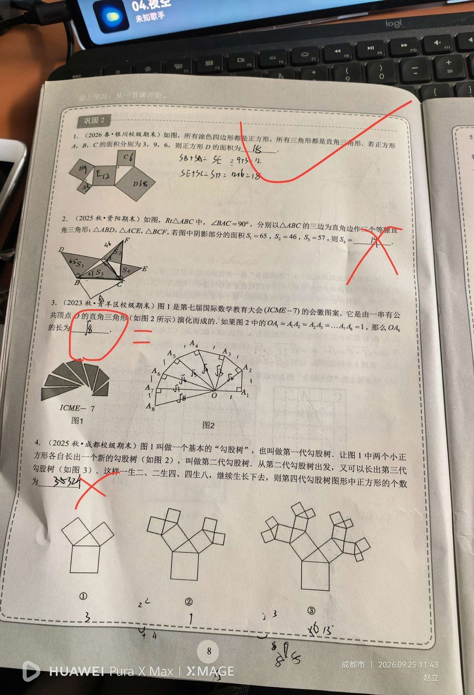

① Rt△ABC，∠BAC = 90°；② 分别以三边为直角边向外作等腰直角三角形；③ 阴影部分面积 S₁ = 65，S₂ = 46，S₃ = 57。
求 S₄。（若琳答 14，被红笔判错；按勾股定理面积推广应为 54）
【核心：勾股定理的「面积版本」】 ① 勾股定理 a² + b² = c² 说的是「以直角边为边的正方形面积之和 = 以斜边为边的正方形面积」； ② 把正方形换成「任意相似图形」（这里是等腰直角三角形）结论仍然成立 —— 因为相似图形的面积比 = 边长比的平方，所以直角边上两个图形的面积和 = 斜边上图形的面积； ③ 因此大块阴影 = 两个小块之和：S₁ + S₂ = S₃ + S₄（哪两块在直角边、哪两块在斜边，按图对号入座）； ④ 代入：65 + 46 = 57 + S₄ ⇒ S₄ = 111 − 57 = 54。
① 只记得 a² + b² = c² 的「数字形式」，想不到它还是「面积关系」（直角边上两图形面积和 = 斜边上图形面积）； ② 不敢把正方形换成等腰直角三角形（其实任何相似图形都可以）； ③ 图中哪块在直角边、哪块在斜边没分清，导致加减方向反了（容易算成 65 − 46 + 57 = 76 或 65 − 46 − 57 之类）； ④ 若琳的 14 就是「胡乱相减」的结果（65 − 46 − 57 附近），没有利用面积关系。
① 勾股定理的几何意义（面积关系，不只是 a²+b²=c²）； ② 「直角边上相似图形面积和 = 斜边上相似图形面积」这一推广； ③ 等腰直角三角形与正方形的面积比关系（½ 倍）； ④ 由已知面积反推未知面积的整体代入法。 📌 出处：第二讲 勾股定理综合复习 巩固2 第2题。同页第1题（勾股树 A、B、C 面积 3、9、6 求 D = 18）答对，未录入。